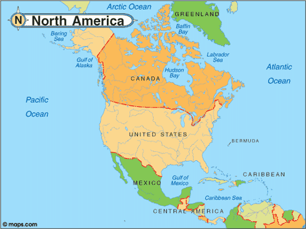

North America is a continent entirely within the Northern Hemisphere and almost all within the Western Hemisphere. It can also be considered a northern subcontinent of the Americas. It is bordered to the north by the Arctic Ocean, to the east by the Atlantic Ocean, to the west and south by the Pacific Ocean, and to the southeast by South America and the Caribbean Sea.
North America covers an area of about 24,709,000 square kilometers (9,540,000 square miles), about 16.5% of the earth's land area and about 4.8% of its total surface. North America is the third largest continent by area, following Asia and Africa, and the fourth by population after Asia, Africa, and Europe.
